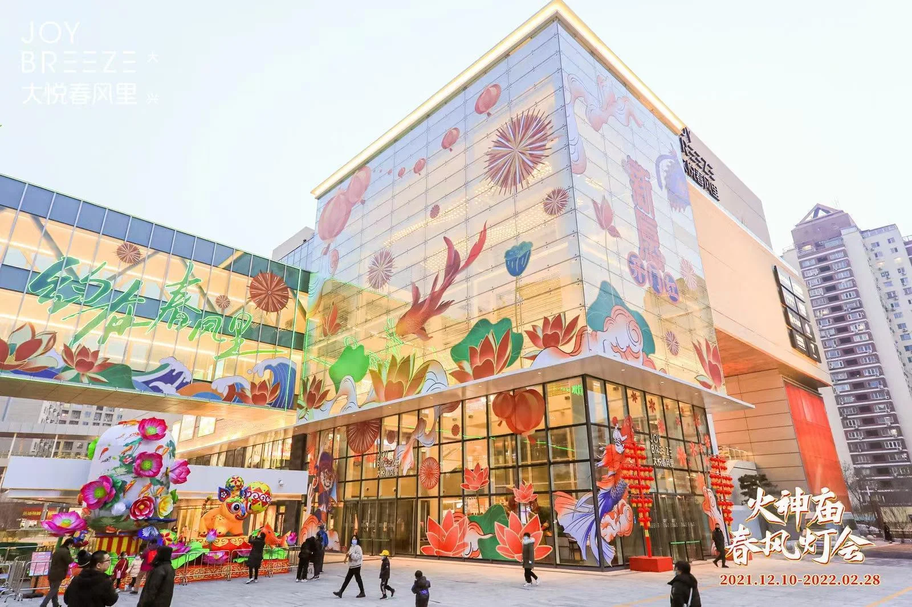
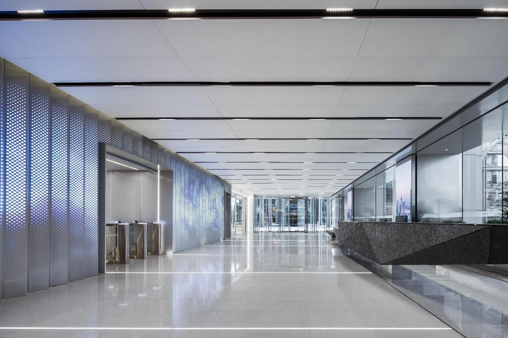
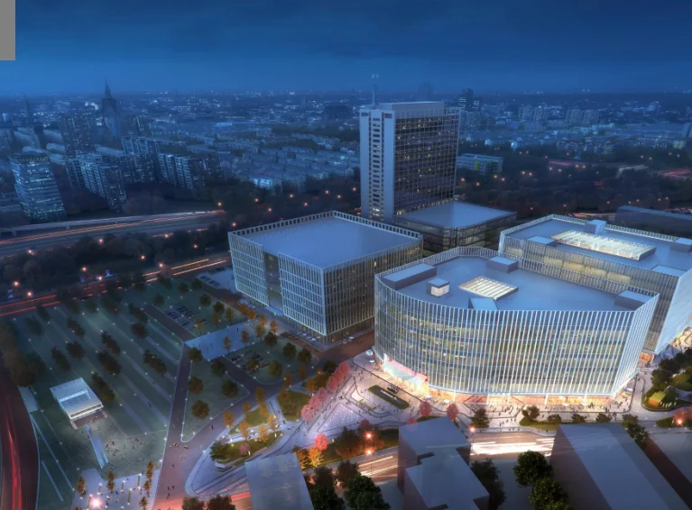
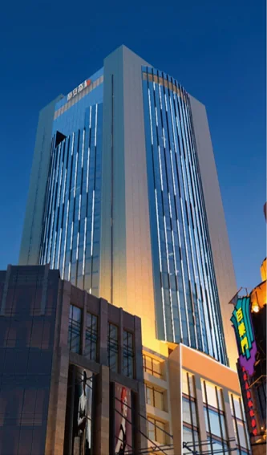
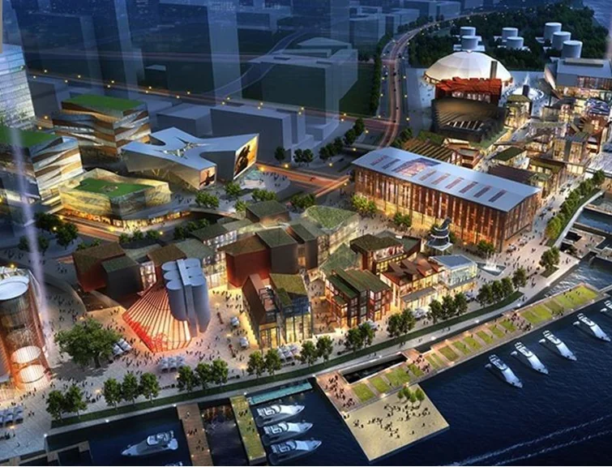
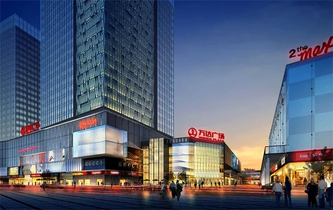

累计投资规模
GOHIGH CAPITAL · SINCE 2009
用金融改变
中国城市的面貌
深植中国本土的商业物业价值创造者
聚焦商业物业价值投资，通过复杂交易解决、资产管理提升与资本市场创新， 与长期伙伴共同激活优质存量空间。
首屏概念视觉 · 非实际项目摄影
IN FIGURES
基于公司介绍材料披露口径，截至 2024 年 6 月
累计收购物业面积
收购物业项目
项目退出案例
专业投资与资管团队
合作保险机构
ABOUT GOHIGH
深度创造价值，
重塑城市面貌
高和资本于 2009 年 10 月成立，是专注商业不动产价值投资的私募基金管理机构， 覆盖购物中心、办公楼、社区商业、长租公寓与产业地产等资产类型。
围绕持有型物业的全生命周期，高和资本连接金融机构、资产持有方与运营伙伴， 在投资顾问、资产收购、基金搭建、改造运营、资产证券化退出及证券化投资等环节提供解决方案。
BUSINESS MODEL
专注不动产价值投资的“一体两翼”
以物业并购及运营增值为核心，以证券化与产业创新延伸资产价值链。
CAPITAL MARKET
资产证券化
ABS 劣后级投资与项目牵头 CMBS / 类 REITs / 公募 REITs 顾问实践CORE BUSINESS
物业并购
不动产私募股权投资 投资 · 改造 · 运营 · 增值 · 退出INDUSTRIAL INNOVATION
不动产 VC
运营管理与地产科技投资 赋能资产的长期运营效率INVESTMENT STRATEGIES
一站式不动产投资服务
六类策略覆盖复杂并购、城市更新、资本结构与资产证券化场景。
不良 / 困境重组并购
解决复杂债务与交易安排，推动优质资产重新进入有效运营。
增值型基金
围绕城市更新，通过定位、改造和运营提升资产品质与活力。
夹层基金
以资产质量和结构化安排为基础，为合作方提供稳健资本方案。
Pre-REITs 基金
围绕未来 REITs 路径，协助优质资产培育与平台储备。
资产证券化业务
连接不动产与资本市场，持续探索证券化产品创新。
不动产 VC 基金
关注运营服务与地产科技，为空间效率和用户体验赋能。
VALUE CREATION
- 投资研判识别资产机会
- 复杂交易设计落地方案
- 改造升级重塑空间定位
- 运营增值提升长期表现
- 资本退出连接长期资金
SELECTED CASES
在城市核心空间中实践价值创造
以下为公司介绍材料展示的部分代表项目，项目图片来自用户提供资料。

困境资产重组并购 · 北京
大悦春风里
由原商业资产改造升级，引入新商业品牌与运营场景。
不良资产重组并购 · 北京
中关村科创大厦
办公与配套商业的空间更新和招商提升。
增值型策略 · 北京
融中心
商改办与产业升级，重构资产使用价值。
增值型策略 · 上海
静安高和大厦
核心区位办公商业资产的改造与提升。
片区城市更新 · 上海
梦中心
滨江核心片区文商综合体更新实践。
夹层投资 · 上海
周浦商业广场
服务区域商业与资产资本方案。案例介绍为历史材料信息摘要，不构成对资产表现、收益或未来安排的陈述或承诺。
SECURITIZATION MILESTONES
连接不动产与资本市场
材料所示，高和资本长期参与中国不动产证券化创新与公募 REITs 实践。
首单标准 CMBS
高和招商 - 金茂凯晨专项资产管理计划
不依赖主体信用的 CMBN
高和 - 世贸天阶 ABN（银行间）
公寓权益型类 REITs
高和 - 新派类 REITs
公寓储架权益型类 REITs
高和 - 旭辉领寓类 REITs
城市更新权益型类 REITs
高和城市更新权益型类 REITs
公募 REITs 首批发行
参与发行招商蛇口产业园 REITs
行业创新
材料披露，高和招商 - 金茂凯晨项目曾获 GlobalCapital AsiaMoney “Best Structured Finance Transaction”。
ECOSYSTEM
长期合作与
行业共建
机构伙伴
围绕持有型物业，与金融机构、保险资金及产业伙伴开展长期合作，形成覆盖投资、运营与退出的协同网络。
研究与政策实践
公司材料展示了其对城市更新、不动产证券化与公募 REITs 相关研究和市场实践的持续参与。
成熟资管体系
以复杂交易处理、资产定位改造、运营管理与金融创新能力，服务不同周期中的不动产价值提升。
LEADERSHIP
管理团队
以不动产投资、资本市场与资产运营经验共同支持长期价值创造。
EXECUTIVE PARTNER
苏鑫
执行合伙人2009 年创立高和资本，拥有丰富的房地产金融及城市更新实践经验。
EXECUTIVE PARTNER
周以升
执行合伙人聚焦不动产私募基金与资产证券化，并参与中国公募 REITs 相关市场实践。
PARTNER
陶民
合伙人拥有长期商业地产投资、开发运营与地产私募基金管理经验。